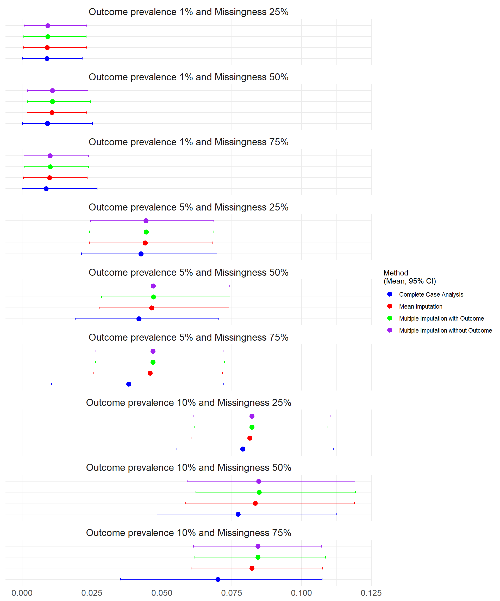
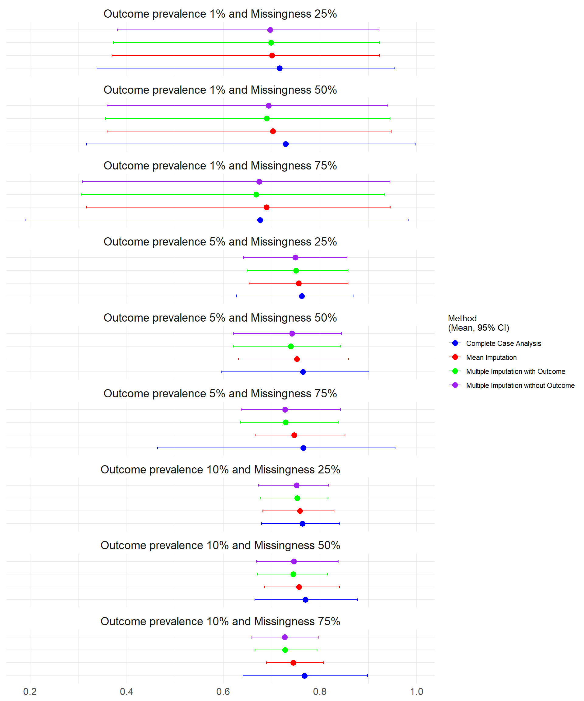
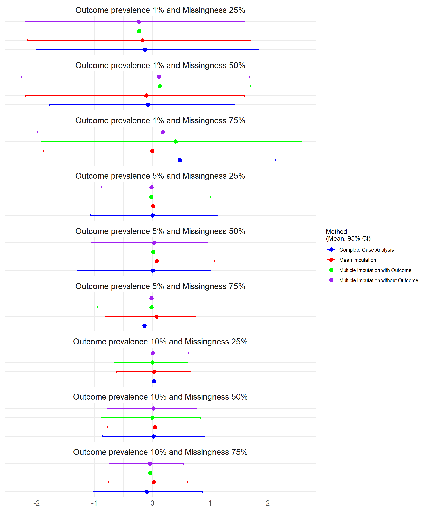
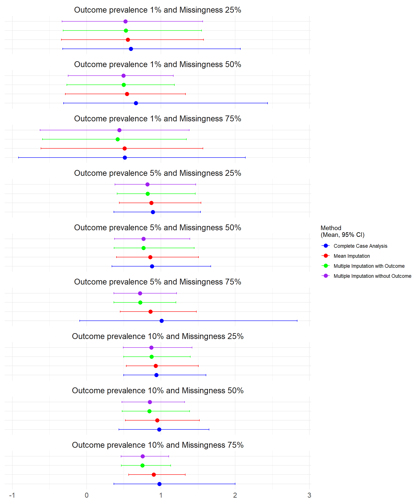
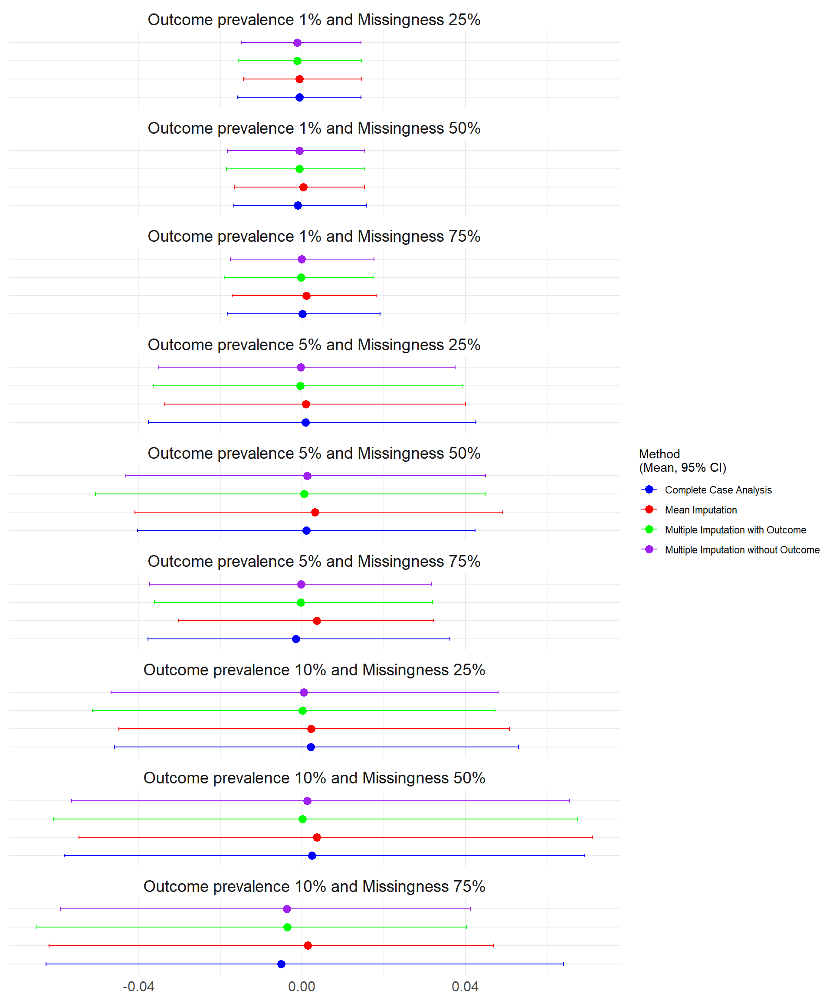
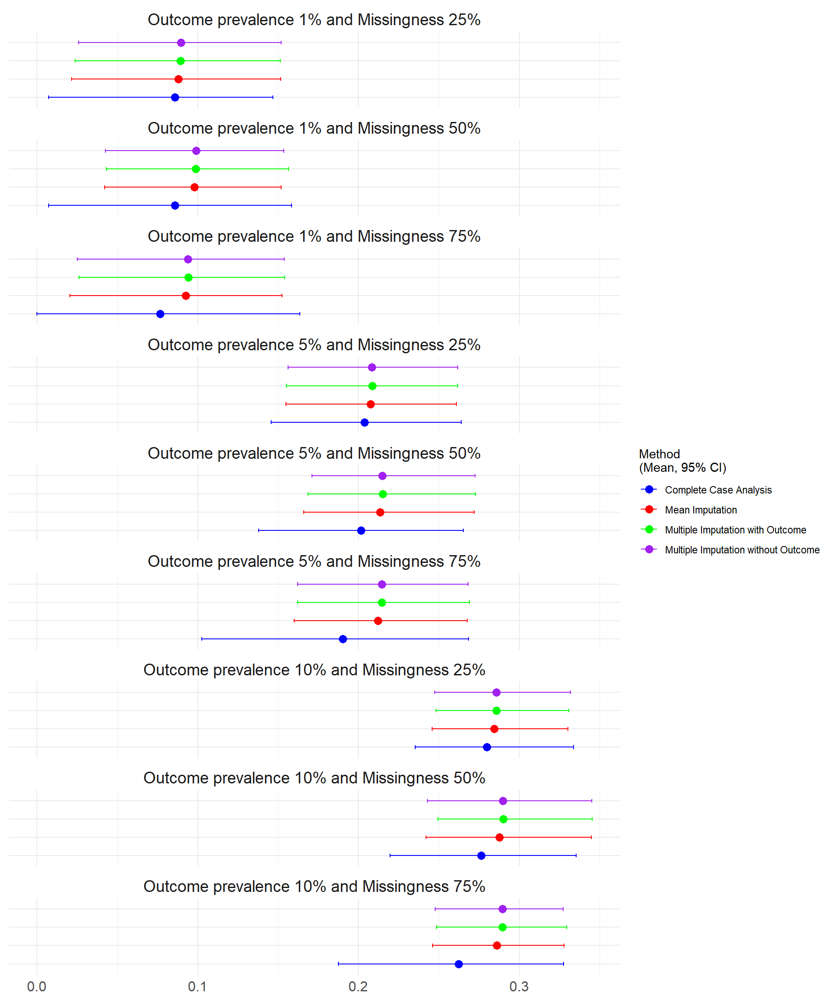

3 Simulation Study 1 Results
3.1 Results from Study 1
In this section, the results from the first simulation study are reported. The development simulation parameters were consistent with the validation parameters except there was no missingness. Sample size was varied at n=500, n=10,000 and n=100,000 and outcome prevalance varied at 1%, 5% and 10%. The missingess in the validation dataset was varied at 25%, 50% and 75% of one predictor variable x1. The first section describes the scenario where n=500.
3.1.1 Predictive Performance from Study 1 N=500 under Missing at Random
3.1.1.1 Brier Score
The Brier score ranges between 0 (perfect accuracy) and 1 (perfect inaccuracy). There was no difference in performance of the imputation methods in any scenario. The lowest brier scores occurred at lower outcome prevalence.
3.1.1.2 Discrimination
The discrimination was calculated as the Area Under the Curve (AUC). Higher scores indicate better discrimination with 0.5 indicating the model is no better than chance.

3.1.1.3 Calibration in the Large and Calibration Slope
The Calibration was assessed through Calibration in the Large (CATL) and the Calibration Slope.
The ideal value of CATL is 0, which indicates perfect calibration, positive values indicate the model is underestimating the risk while negative values indicate overestimation. Larger deviations from 0 suggest poorer calibration.

The ideal value of the Calibration Slope is 1 indicating perfect calibration across all risk levels. Values less than 1 suggest overfitting (predictions are too extreme), while values greater than 1 suggest underfitting (predictions are too conservative). Values that differ significantly from 1 indicate poor calibration.

3.1.2 Bias
The Bias was assessed for each simulation (where 0 indicates no bias and the model estimates are on average equal to the true values).

3.1.3 Root Mean Square Error
The RMSE was assessed for each simulation where lower error indicates a better fit of the model. The lowest prevalence simulations (1%) had the lowest mean square error.
